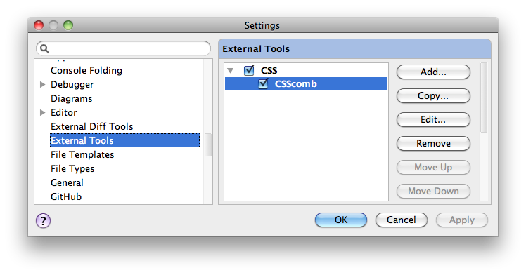

How to install CSScomb for IntelliJ IDEA or WebStorm
Required
- PHP
- CSScomb for IntelliJIDEA/WebStorm
- IntelliJIDEA or WebStorm
Install
-
Open Preferences → External Tools

Click Add
-
- Name: CSScomb
- Description: CSS normalizer
- Program: php
- Parameters: /path/to/csscomb.php $FilePath$